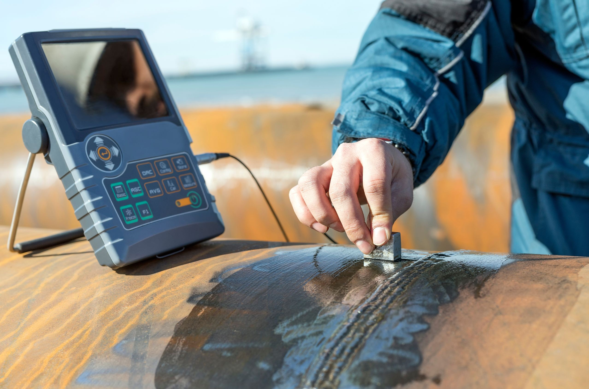
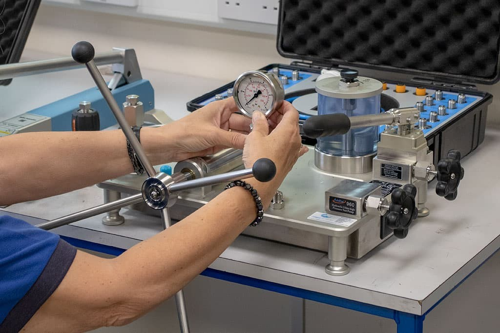
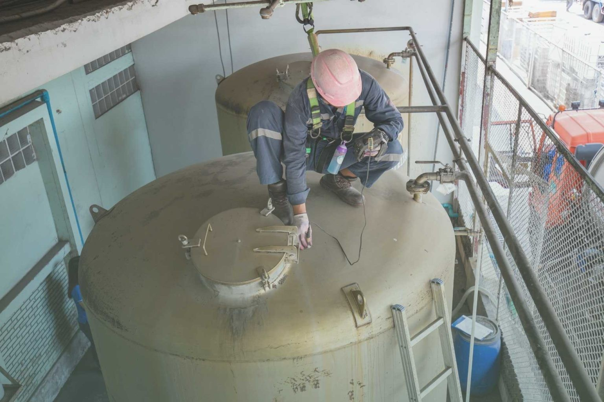

5 Marine Safety Practices Every Crew Should Follow
Why risk assessment, hazard identification, and consistent PPE use remain the foundation of safe vessel operations.
Read Article →Practical guidance from our engineering team — on ship cleaning processes, inspection standards, and equipment reliability.

Why risk assessment, hazard identification, and consistent PPE use remain the foundation of safe vessel operations.
Read Article →
From surface preparation to grit blasting — what actually happens during a full interior and exterior clean.
Read Article →A practical comparison of the four core non-destructive testing methods and when each one applies.
Read Article →
How drift in pressure and measurement instruments compounds over time — and how scheduled calibration catches it early.
Read Article →
The inspection checkpoints that determine whether lifting equipment is safe to certify for continued use.
Read Article →
How DCVG surveys and cathodic protection systems extend the operational life of buried pipelines.
Read Article →